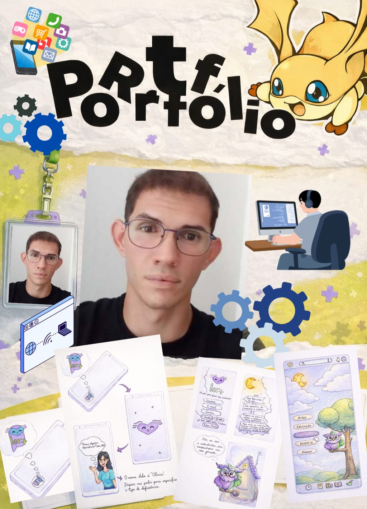
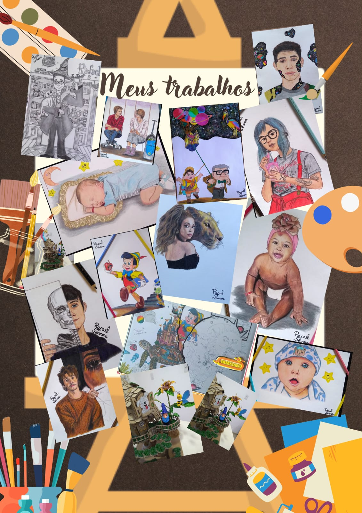

Meus Projetos

Projeto 1

Projeto 2

Sou professor de Arte 🎨 e estudante de Tecnologia em Sistemas para Internet pela UESPI, apaixonado por transformar ideias em experiências visuais que inspiram, conectam e ensinam. Busco unir criatividade e tecnologia para transformar o mundo, criando soluções que impactam vidas, despertam emoções e contribuem para uma sociedade mais inovadora e conectada.
Desenvolvedor em formação 🚀
Sou apaixonado por desenhar, criar ilustrações, desenvolver artesanato e explorar o mundo através da arte 🎨. Gosto de assistir séries, filmes e mergulhar em documentários sobre o universo 🌌 e a natureza 🌿, sempre buscando novas inspirações para minhas criações.
Também sou amante de anime 🎌 e fã de Pokémon desde a infância, elementos que influenciam diretamente minha criatividade, meu estilo visual e a forma como enxergo o mundo ao meu redor.
Durante minha formação em Sistemas para Internet pela UESPI, desenvolvi projetos importantes, incluindo a criação de um protótipo completo de aplicativo — desde o design visual até a navegação funcional. Nesse processo, fui responsável por estruturar a experiência do usuário, criando soluções intuitivas, organizadas e visualmente atrativas.
Atualmente, estou desenvolvendo este portfólio online, unindo arte 🎨 e tecnologia 💻 para criar experiências visuais modernas, interativas e com identidade própria — com o objetivo de impactar, inspirar e transformar ideias em realidade no mundo.

